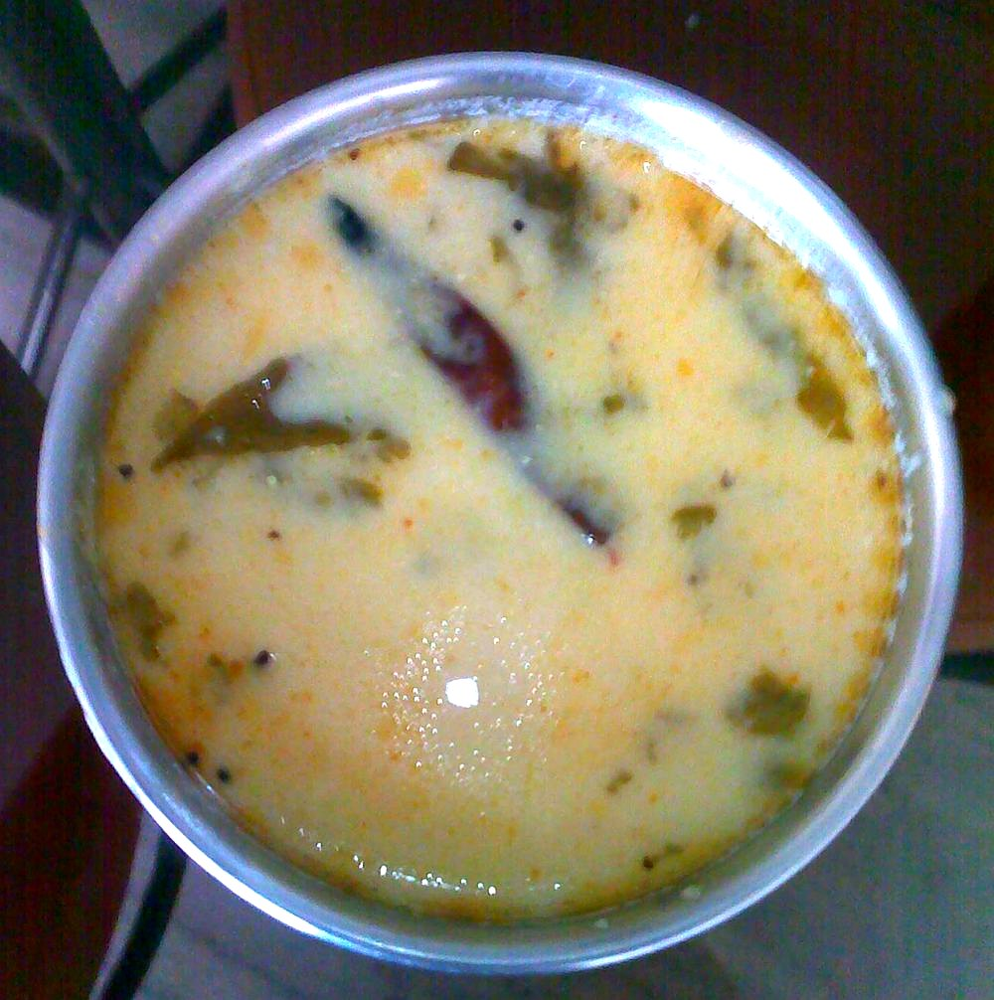

Contains: dairy
Ingredients
Quantities for 4.
- 500g, peeled and cut into 1cm rounds Lotus Stemscrub the mud out of the hollows and slice into coins
- 500g full-fat, whisked smooth Yogurt
- 3 tbsp Ghee
- 2 tbsp Fennel Powder
- 2 tsp Dry Ginger Powder
- 1/4 tsp Asafoetidause compounded-free hing to keep the dish gluten-free
- 4 green, bruised Cardamom
- 3 Cloves
- 1 stick, 5cm Cinnamon
- 1 Bay Leaf
- 1 tsp dried, crushed Mint
- 1/2 tsp Black Pepperoptional
- 500ml Water
- to taste Salt
Cookware
stovetop
Before you start
- If you are using real lotus stem, split each length open and rinse the hollow channels under a running tap — silt sits inside and no amount of surface washing reaches it.
- Whisk the yogurt with 2 tbsp water until smooth and let it stand out of the fridge for 30 minutes so it does not split.
- Cut the rounds thick, about 1cm. Thin slices go soft and disappear into the gravy.
Method
- Boil the rounds in the water with the bay leaf, cloves, cinnamon and 1/2 tsp salt for 12 minutes, until a knife goes in with slight resistance.Slight resistance, not soft — they will cook on in the gravy.
- Drain, keeping every drop of the cooking water.
- Heat the ghee in a heavy pan and add the hing, letting it foam for 10 seconds.
- Off the heat, stir in the fennel powder and dry ginger for 20 seconds.Ground fennel scorches almost instantly on a hot base; take the pan off the flame first.
- Return to low heat, add the drained rounds and turn them for 3 minutes until coated.
- Take the pan off the heat, pour in the yogurt and stir continuously for 2 minutes before setting it back on the lowest flame.Do not walk away here. Yogurt that is heated without stirring curdles into grains.
- Add 350ml of the reserved cooking water, the cardamom, mint and black pepper, and simmer uncovered 15 minutes until the gravy just coats the rounds.
- Check the salt and rest 5 minutes off the heat before serving with rice.
Storage
Keeps 2 days refrigerated. Reheat over the lowest flame with a splash of water, stirring — boiling will break the yogurt.
Nutrition Low estimate
| Per serving270 g | Per 100 g | |
|---|---|---|
| Calories | 285+ kcal | 105+ kcal |
| Protein | 9.0+ g | 3.3+ g |
| Carbohydrate | 32.6+ g | 12.1+ g |
| of which sugars | 5.9+ g | 2.2+ g |
| Fibre | 9.5+ g | 3.5+ g |
| Fat | 14.9+ g | 5.5+ g |
| of which saturated | 8.7+ g | 3.2+ g |
| of which unsaturated | 5.2+ g | 1.9+ g |
The + means ingredients given to taste rather than by weight are counted as zero, so the true figure is a little higher than shown. A rough guide only. A large part of this ingredient list is given to taste rather than by weight, or much of what is weighed is not eaten. Ingredients given to taste rather than by weight are counted as zero, so the real figure is a little higher than this. The + says so. Some ingredients have no exact match in the nutrient database and use the nearest equivalent: asafoetida. Estimated from raw ingredients using USDA FoodData Central. Cooking changes are not modelled, and added salt is excluded, so sodium is not given.
Recipe v1.0.0, last updated 2026-07-31. Curated for Khaana and kept under version control.